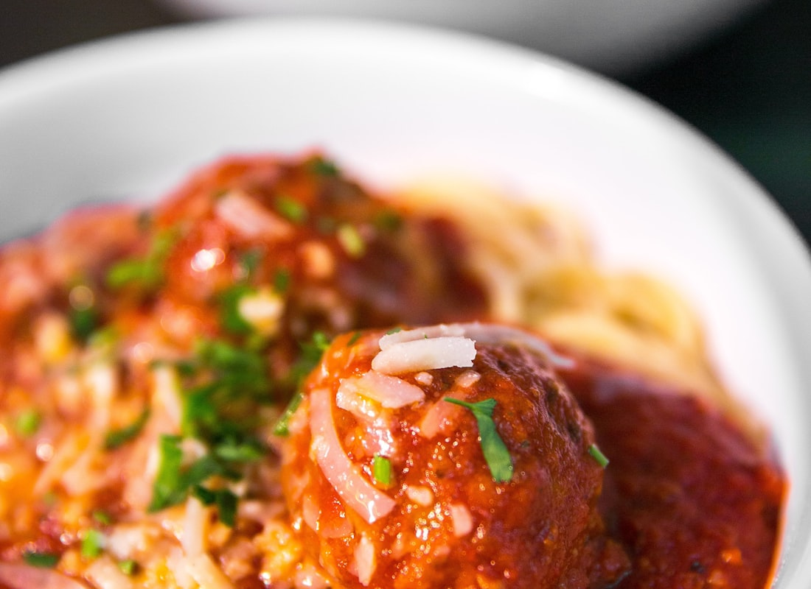
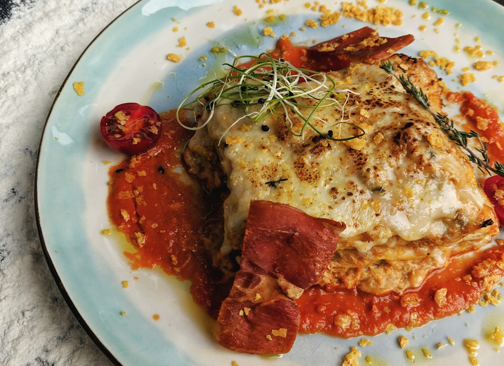

Recipe
Turkey meatballs, tomato sauce, green beans, rice
Different texture from chili. Lean turkey, simple tomato sauce, no cream, no frying.
4 plates
35 minutes
3–4 days fridge · freeze Friday dinner



Swipe for more photos.
Ingredients
- Meatballs: 1¼ lb extra-lean ground turkey
- 1 small onion, grated
- 2 garlic cloves, minced
- ⅓ cup plain breadcrumbs
- 1 egg
- 1 teaspoon dried oregano
- ½ teaspoon black pepper
- 1 tablespoon olive oil for the pan
- Sauce: 1 (28 oz) can no-salt-added crushed tomatoes
- 2 garlic cloves, sliced
- 1 teaspoon dried oregano + ½ teaspoon dried basil
- 1 lb green beans, trimmed
- 2 cups cooked brown rice
- 1 tablespoon olive oil for the beans
- Optional: basil or parsley
Steps
- Mix turkey, grated onion, garlic, breadcrumbs, egg, oregano, pepper. Don’t overwork. 16 golf-ball meatballs.
- Oven 425°F. Sheet pan: meatballs + green beans tossed with 1 tablespoon oil and pepper. Roast 16–18 minutes until meatballs are 165°F.
- Meanwhile sauce: 1 tablespoon oil, sliced garlic 30 seconds, tomatoes, oregano, basil, pepper. Simmer 10 minutes.
- Nest meatballs in the sauce. Pack rice, beans, meatballs + sauce.
- Reheat sauce to a simmer. Rice with a splash of water.
Why it fits the week
Same turkey family as the chili, different shape so the week doesn’t blur.